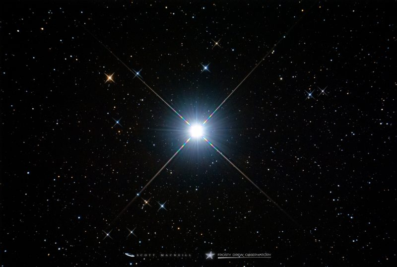

Flying past
Passing the sun gets you nervous since the heat is almost unbearable, thankfully, you made it through. As you are flying through space, you notice a specific star is flashing, which strikes your curiousity. Then, you notice Mercury is also not far from where you are, and there is a possibility of the crystal being there...


What should you do?